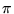

1, 2345, -678, ...), floating-point
(1.2, 3.45e-6, 7.0, ...), and complex numbers
(1+2j, 3.4-5.6j, 7j, ...). Here is a table of
some of the operations available on numbers:
x ** y |
Exponentiation: xy |
- x |
Negation |
x * y |
Multiplication |
x / y |
Division (see note below) |
x % y |
Remainder |
x + y |
Addition |
x - y |
Subtraction |
x == y |
Equality test (see note below) |
x != y |
Inequality test |
x < y, x <= y, ... |
Comparison tests |
x in y, x not in y |
Membership tests (see Lists) |
not x |
Logical negation |
x and y |
Logical conjunction |
x or y |
Logical disjunction |
a + b / c * d - e, the division will be evaluated
first; the entire expression will be evaluated as if it were
parenthesized as follows: (a + ((b / c) * d)) - e.
One potential source of bugs is the division operator. If both operands
are integers (that is, they don't have a fractional part, not even
.0), then Jython will perform ``integer division''--the result
will be the integer quotient, throwing away the remainder. For example,
13 / 5 evaluates to 2, while 13.0 / 5 evaluates to
2.6. You can use the percent sign to get the remainder:
13 % 5 is 3. If you have two variables that both contain
integers and you want to divide them as floating-point numbers, apply the
float function to one of them: float(x) / y.
Jython has no special values for true and false; whenever a test is
performed, it will treat zero as false and any other number as true.
The equality and comparison operators produce 1 for true. Note
that equality uses two equal signs; writing x = y instead
of x == y will usually cause an error, although in some cases it
may be interpreted as an assignment of y to x (see below).
In addition to operators, there are many functions available in Jython. Here are some of the useful numeric functions:
abs(x) |
Absolute value | acos(x) |
Arccosine |
asin(x) |
Arcsine | atan(x) |
Arctangent |
ceil(x) |
Ceiling (round up) | complex(a, b=0) |
Return a + b * 1j |
cos(x) |
Cosine | divmod(a, b) |
Return (a / b, a % b) |
exp(x) |
Return ex | float(x) |
Convert to floating-point |
floor(x) |
Floor (round down) | int(x) |
Convert to integer (round toward 0) |
log(x) |
Natural logarithm (base e) | log10(x) |
Common logarithm (base 10) |
pow(x, y) |
Return xy | round(x) |
Round (nearest integer) |
sin(x) |
Sine | sqrt(x) |
Square root |
tan(x) |
Tangent | pi |
The constant  |
Strings of text may be written in either single or double quotes:
'Hello World', "Isn't this easy?". Strings may be
concatenated with +, and replicated with *. For example,
2*'ko' + 'mo' produces 'kokomo'. Jython does not have a
separate type of value for single characters; the function chr(x)
produces the one-character string whose ASCII (actually, Unicode) code
is x, while ord(s) reverses the process by returning the
numeric code for the first character of s. Any Jython value may
be converted to string form with the function str(x). Strings
are a special case of (immutable) sequences, so most of the list
functions described below also apply to strings; for example,
len(s) returns the length of s. There are also many
special string methods, such as s.capitalize() to create a copy
of s with the first letter converted to upper-case; consult the
documentation at http://www.python.org/ for details.
1,
2.3, and "Hello", write the values between square
brackets: [1, 2.3, "Hello"]. Note that Jython allows
heterogeneous lists--the elements do not all have to be of the
same type (Jython is referred to as a ``dynamically typed'' language;
each value has a type associated with it, but storage locations such as
variables are not restricted to hold values of any particular type).
You may also construct a list one element at a time: start by storing
the empty list in a variable, then use the append(x) method to
add values to the end of the list. For example, the statements
a = []
a.append(1)
a.append(2.3)
a.append("Hello")
will cause a to contain the list [1, 2.3, "Hello"]. To
find out how many elements are in a list, use the len function:
for example, len(a) is 3 after the above statements. If
you have a list of numbers, say nums, you can find the largest
and smallest values with max(nums) and min(nums).
Two lists may be concatenated with +, and the list a may be repeated n times by writing n * a (in fact, the similar operations on strings are just a special case of these). If the list a has n items, then they may be accessed by indexing the list: a[0] is the first element, a[1] is the second, ..., a[n-1] is the last. A sublist may be extracted using a slice, which is a range of indices specified by the start and (one past) the end, separated by a colon: a[3:6] is the sublist containing a[3], a[4], and a[5], while a[0:len(a)] is (a copy of) the entire list a. Instead of taking every element in the given range, a slice may optionally give a step value after a second colon: for example, a[0:6:2] contains only a[0], a[2], and a[4]. These operations also work for strings, so "Hello world"[2:8:2] is the string "low". One operation that does not work for strings (since they are immutable) is assigning a new value to an item (or a simple slice--no step allowed) in a list: the statement a[2] = 17 replaces the current third item in a with 17, while a[1:3] = ["this", "is", "a", "test"] replaces the current two-element sublist starting at index 1 with a four-element sublist.
The in operator may be used to test whether a value is present in a list: 3 in [1, 2, 3, 4] is true (1), while 3 in [] is false (0). To find out where the item occurs in the list, use the index method: if a is [3, 1, 4, 1, 5], then a.index(4) is 2, while a.index(1) is 1 (it returns the first index where the item is found). Other useful methods include a.sort(), which rearranges the elements into sorted order, and a.reverse(), which reverses the list.
The built-in function range will produce a list of integers, ideal for use in the for statement (see below). The call range(n) will produce the list [0, 1, ..., n-1] (as usual, the last number in the range is not included). The call range(m, n) will produce [m, m+1, ..., n-1], and the call range(m, n, s) will use s as the step value: [m, m+s, ..., m+k*s] (where k is the largest integer such that m+k*s is less than n).
There are many more powerful operations on lists; if you are interested, I particularly encourage you to explore map, reduce, and ``list comprehensions'' in the documentation at http://www.python.org/.
random module. To access it, include the line ``from random import *'' at the top of your script (or type it at the interactive prompt). After doing so, the following functions will be available:
choice(a) |
Return a randomly chosen element of the list a |
random() |
Return a random floating-point number between 0 and 1 |
randrange(m, n, s) |
Same as choice(range(m, n, s)), but faster |
randrange(m, n) |
Same as randrange(m, n, 1) |
randrange(n) |
Same as randrange(0, n) |
shuffle(a) |
Randomly shuffle the elements of the list a |
uniform(a, b) |
Return a random floating-point number between a and b |
var = expression; as noted above, the var could also be a list item or slice) and the print statement (although any expression typed by itself at the interactive prompt will automatically be printed; from a JES script, the output of print e does not go to the interactive console, so you should use printNow(e) instead). Any expression may also serve as a statement--this is most useful for function calls that have some side-effect, such as show(pic) to show a picture.
To conditionally execute a block of statements based on the result of a test, use the if statement:
if <test expression>: <block of statements to execute> <if the test comes out true>Note that the block of statements guarded by the
if must be indented. If the test comes out false, the next statement to be executed will be the first following statement that starts in the same column as the if. A sequence of tests may be performed as follows:
if <test one>: <block one> elif <test two>: <block two> elif <test three>: <block three> ...The first test that comes out true will have its corresponding block executed; none of the remaining tests will be tried. After zero or more
elif statements, you can catch the situation where none of the tests were true with an else statement:
if <test one>: <block one> ... else: <block of statements to execute> <if all the tests failed>For example, here is a sequence of statements that generate a random number from 0 to 2 and set the variable
c to the color red, green, or blue accordingly:
randNum = randrange(3) if randNum == 0: c = red elif randNum == 1: c = green else: c = blueNote that it would not work to write
if randrange(3) == 0, followed by elif randrange(3) == 1, since the two calls to randrange(3) will produce independent random values. Also note that a much better version of this operation is simply to write
c = choice([red, green, blue])
To repeatedly execute a block while a test is true, use the while statement:
while <test expression>: <block>The most common situations for repetition are looping through the elements of a list and counting a fixed number of iterations of a block. The
for statement is a variant of while which is tuned for these special cases:
for x in a: <block to execute once for each element of a> <x will take on successive values from the list>To execute a block of statements
n times, use the range function:
for i in range(n): <block to execute n times> <i will take on values 0, 1, ..., n-1>
The last compound statement we will need is the function definition:
def <function name>(<arguments>): <block of statements to execute when function is called>For example, the following function will add up the numbers in a list:
def sum(a):
total = 0
for x in a:
total = total + x
return total
If a function is to be called purely for its side-effects, it does not need a return statement; otherwise, the statement return <expression> causes the function call to produce the value of <expression> for the caller. After the above definition, if we execute print sum([1, 2, 3]), then the result 6 will be printed.
When a function is called, the values (if any) in the parentheses after the name of the function will be matched up with the arguments listed in the def statement, so that those variables will start the function block containing those values. It is possible to provide default values for some of the arguments; for example, here is one possible implementation of the two- and three-argument versions of the range function (also handling the one-argument version is more work):
def range(m, n, s=1):
a = []
while m < n:
a.append(m)
m = m + s
return a
When it is called as range(m, n), the third argument defaults to 1.
First, here are some general utility functions provided by JES:
setMediaFolder() |
Prompt the user to choose a folder that will be used as the default location for files |
pickAFile() |
Prompt the user to choose a file; returns the full filename as a string |
printNow(s) |
Print the string s in the interactive console (works from a script) |
pause(sec) |
Pause script execution for sec seconds (defaults to 0.1) |
makePicture(file) |
Return a picture loaded from a GIF, JPEG, or PNG file |
makeEmptyPicture(w, h) |
Return a blank picture (all pixels black) with the given width and height |
writePictureTo(pic, file) |
Save pic in JPEG format to the given file name |
openPictureTool(pic) |
Open the picture exploration window for pic |
show(pic) |
Display the picture pic on the screen |
repaint(pic) |
Refresh the picture pic on the screen after pixels have changed |
getPixels(pic) |
Return a list of all the pixels (all the rows concatenated together) |
getPixel(pic, x, y) |
Return the pixel from row x, column y (upper-left is at 1, 1) |
getWidth(pic), getHeight(pic) |
Return the number of columns or rows in pic |
x.f(y) instead of f(x, y)--the advantage is that different kinds of objects can respond to the same method name by running different code, since the method definition is looked up relative to the object):
pic.clear(c) |
Clear all the pixels to the color c (defaults to black) |
pic.copy() |
Return a new picture which is a copy of pic |
pic.setTitle(s) |
Set the title for pic's window to the string s |
pic.addLine(c, x1, y1, x2, y2) |
Draw a line with color c from (x1,y1) to (x2,y2) |
pic.addRect(c, x, y, w, h) |
Draw a rectangle with color c, corner at (x,y), and size w by h |
pic.addRectFilled(c, x, y, w, h) |
Same, but fill with color c |
pic.addOval(c, x, y, w, h) |
Draw an oval inside the given rectangle |
pic.addOvalFilled(c, x, y, w, h) |
Fill the oval |
pic.addArc(c, x, y, w, h, s, a) |
Draw part of an oval, starting at angle s (in degrees; 0o is the x-axis, increasing counter-clockwise) and spanning angle a |
pic.addArcFilled(c,x,y,w,h,s,a) |
Fill in the wedge defined by the arc |
pic.addText(c, x, y, s) |
Write the string s with color c and lower-left corner at (x,y) |
pic.addTextWithStyle(c, x, y, s, style) which has an extra argument describing the font. You can create a style object with the function makeStyle(font, emphasis, size), where font can be sansSerif, serif, or mono, emphasis can be plain, bold, italic, or bold+italic, and size is the point size (roughly the height of the characters). The default is makeStyle(sansSerif, plain, 15).
If you have a list of pictures, say frames, you can create a QuickTime movie file with the function makeMovieFromPictures(frames, file). The file name (file) should end in .mov. There is an optional third argument to specify the number of frames per second; it defaults to 30. If you have QuickTime for Java installed, you can view the movie with openMovie(file).
p.setRed(r) instead of setRed(p, r), for example):
setRed(p, r), setGreen(p, g), setBlue(p, b) |
Change the given color component of p |
getRed(p), getGreen(p), getBlue(p) |
Return the given color component of p |
setColor(p, c), getColor(p) |
Change or return the color of p |
getX(p), getY(p) |
Return the coordinates of p |
pickAColor() |
Prompt the user to choose a color; returns the color chosen |
Color(r, g, b, alpha) |
Create a new color object with the given components (alpha defaults to 255 if not given) |
c.r, c.g, c.b, c.alpha |
Return the value of a color component |
distance(c1, c2) |
Compute the (Euclidean) distance between colors c1 and c2 |
increaseBrightness(c, f) |
Return a new color whose brightness level is scaled up by f, from no change if f is 0.0, up to full brightness (white) if f is 1.0; f defaults to 0.5 |
decreaseBrightness(c, f) |
Return a new color whose brightness level is scaled down by f, from no change if f is 0.0, down to no brightness (black) if f is 1.0; f defaults to 0.5 |
increaseSaturation(c, f) |
Similar, for saturation level (the difference between the maximum and minimum color components) |
decreaseSaturation(c, f) |
Ditto |
increaseRed(c, f) |
Similar, for the red component |
decreaseRed(c, f) |
Guess |
| ... | Similar functions for Green, Blue, Yellow, Cyan, and Magenta |
rotateHue(c, a) |
Return a new color whose hue is shifted by angle a, in degrees (
120o from red is green,
240o is blue, etc.); a defaults to
60o |
black, white, gray, darkGray, lightGray, red, green, blue, yellow, cyan, magenta, orange, and pink.
t on the picture pic, execute the statement ``t = Turtle(pic)''. A picture may have several turtles active at any given time, each with their own transformation and color; for debugging purposes, the turtles may be set to show themselves, but for efficiency they should remain hidden most of the time. If the turtle is hidden, you will need to explicitly show(pic) or repaint(pic) to see its effect.
Here are the methods recognized by turtles:
t.reset() |
Reset the turtle to the center of the picture, scaled so that the right edge is one unit forward and the top edge is one unit to the side |
t.copy() |
Return a new turtle with the same transformation and color as t |
t.color |
Return the pen color; change the color of t by assigning to this (for example, t.color = red) |
t.width |
Return the pen width; change it by assigning to this |
t.show(), t.hide() |
Make the turtle visible or invisible |
t.move(x, y) |
Move (without drawing) forward x units and sideways y units (y defaults to 0 if not present) |
t.moveForward(x) |
Same as t.move(x) |
t.moveSide(y) |
Same as t.move(0, y) |
t.draw(x, y) |
Draw a line from the current position to the point (x, y) (y defaults to 0 if not present) |
t.drawForward(x) |
Same as t.draw(x) |
t.drawSide(y) |
Same as t.draw(0, y) |
t.turn(a) |
Rotate counter-clockwise by angle a (in degrees) |
t.scale(s) |
Scale the size of the turtle by factor s; t.scale(0.5) makes the turtle half as large, so t.draw(1) will only go half as far as before |
t.scaleBoth(sx, sy) |
Scale the turtle by sx in the forward (x) direction, and sy in the side (y) direction |
t.scaleForward(s) |
Same as t.scaleBoth(s, 1.0) |
t.scaleSide(s) |
Same as t.scaleBoth(1.0, s) |
t.shear(x, y) |
Shear the y-coordinate forward by x, and the x-coordinate to the side by y; y defaults to 0 |
t.shearForward(x) |
Same as t.shear(x) |
t.shearSide(y) |
Same as t.shear(0, y) |
t.drawCircle(r) |
Draw a circle centered on the current position with radius r |
t.drawEllipse(rx, ry) |
Draw an ellipse centered on the current position with forward radius rx and side radius ry |
t.drawSquare(w) |
Draw a square with lower-left corner at the current position and side length w |
t.drawRectangle(w, h) |
Draw a rectangle with lower-left corner at the current position and size w by h |
t.fillCircle(r) |
Same as t.drawCircle(r), but filled |
t.fillEllipse(rx, ry) |
Same as t.drawEllipse(rx, ry), but filled |
t.fillSquare(w) |
Same as t.drawSquare(w), but filled |
t.fillRectangle(w, h) |
Same as t.drawRectangle(w, h), but filled |
t.stamp(pic) |
Copy the picture pic at the current turtle position, transformed to fit from (-1, -1) to (1, 1) in turtle coordinates |
makeSound(file) |
Return a sound loaded from a WAV, AU, or AIFF file |
makeEmptySound(sec) |
Return a blank sound (all samples 0) of length sec seconds |
writeSoundTo(s, file) |
Save s in the given file; uses the same format as when loaded (makeEmptySound creates a sound in WAV format) |
openSoundTool(s) |
Open the sound exploration window for s |
play(s) |
Play sound s in the background |
playAtRate(s, r) |
Play s at speed r--1.0 is normal, 2.0 is twice as fast, etc. |
playInRange(s, b, e) |
Play s from sample number b to e |
playAtRateInRange(s, r, b, e) |
Play s from b to e at speed r |
blockingPlay(s) |
Play s and wait for it to finish (also, blockingPlayInRange and blockingPlayAtRateInRange) |
getSamples(s) |
Return the collection of samples in s (not quite a list, but indexable and usable in a for loop) |
getLength(s) |
Return the number of samples in s |
getSamplingRate(s) |
Return the number of samples per second in s |
s.getSampleValue(i) |
Return the (left channel, if stereo) value of the
ith sample in s (the first sample is at index 1) |
s.getLeftSampleValue(i) |
Return the left channel value at index i |
s.getRightSampleValue(i) |
Return the right channel value at index i |
s.setSampleValue(i, v) |
Set the (left) value of sample i to v; the range of sample values is -32,768 to +32,767 |
s.setLeftSampleValue(i, v) |
Same |
s.setRightSampleValue(i, v) |
Guess what? |
s.getSampleObjectAt(i) |
Extracts the sample object at index i, without creating a whole collection of samples |
samp.value |
Return the value of sample samp; change the value by assigning to this |
samp.left |
Return or change the left channel value of samp |
samp.right |
Return or change the right channel value of samp |
Finally, JES provides a simple function to play a MIDI note: playNote(n, dur, vol) plays note number n (middle C is 60, C-sharp is 61, etc.; the range is 0-127) for dur milliseconds at volume vol (maximum is 127). The function pauses execution until the note is finished. For much more complete support of MIDI music, see the next section.
The primary model for constructing music with jMusic is known as ``off-line'' composition--the program generates an entire piece and saves it as a file, which can then be played. In general, this is much more flexible than ``real-time'' composition, where the computer only has the time until the next note has to play to figure out what to do. An entire piece is represented by a score object. A score contains one or more parts, each associated with an instrument. A part is composed of phrase objects, each of which contains some number of note objects. Notes in a phrase may be combined horizontally, as successive notes in a melody, or vertically, as notes in a chord. Each note is specified by a number (the MIDI note number, as described above) or a frequency to determine the pitch, plus a dynamic level, duration, and stereo panning position.
Here is a sampling of the functions and methods available for notes:
Note(p, rv) |
Create a note object with pitch number p (0 to 127; middle C is 60) and rhythmic value rv (1.0 is one beat) |
Note(f, rv) |
Create a note object with frequency f (440.0 is A above middle C) and rhythmic value rv |
n.copy() |
Return a copy of note n |
n.duration |
Return or change the duration of note n (by default, 90% of the rhythmic value) |
n.dynamic |
Return or change the dynamic level of note n, from 0 to 127 |
n.frequency |
Return or change the frequency of note n |
n.offset |
Return or change the offset (how much after the beat the note really starts) of note n |
n.pan |
Return or change the stereo pan of n, from 0.0 (left) to 1.0 (right) |
n.pitch |
Return or change the pitch of note n |
n.rhythmValue |
Return or change the rhythm value of note n, in beats |
n.isScale(scale) |
Return true if n is a note in the given scale (see below) |
JM.MAJOR_SCALE, JM.MINOR_SCALE, JM.PENTATONIC_SCALE, etc. Check the documentation for the complete list. There are also a large number of constants defined for pitches (JM.REST, JM.C4,
JM.CS4 = JM.DF4, ...), rhythmic values (
JM.WHOLE_NOTE = JM.WN,
JM.DOTTED_HALF_NOTE = JM.DHN,
JM.QUARTER_NOTE_TRIPLET = JM.QNT, ...), and dynamic levels (JM.PPP to JM.FFF), among other things.
Here are some of the functions and methods for phrases and chords:
Phrase() |
Create an empty phrase |
ph.copy() |
Return a copy of phrase ph |
ph.addNote(n) |
Add a note object n to the phrase ph |
ph.addNote(p, rv) |
Add a note with the given pitch and rhythmic value to ph |
ph.addNoteList(notes) |
Add a list of note objects to ph |
ph.addNoteList(ps, rvs) |
Add a list of pitches (ps) and corresponding rhythmic values (rvs) to ph |
ph.addChord(ps, rv) |
Add a chord with list of pitches (ps) and common rhythmic value (rv) to ph |
ph.startTime |
Return or change the starting time (in beats) of ph |
ph.endTime |
Return the ending time of ph (read-only) |
ph.pan |
Return or change the stereo pan of ph |
ph.size() |
Return the number of notes in ph |
ph.getNote(i) |
Return the note at index i (starting at 0) |
CPhrase() |
Create an empty chord |
c.copy() |
Return a copy of chord c |
c.addChord(ps, rv) |
Add a list of pitches (ps) and rhythmic value (rv) to c |
c.addChord(notes) |
Add a list of notes to c (rhythmic value is that of notes[0]) |
c.flam(offset) |
Create a strumming effect by offsetting successive notes in c |
c.startTime |
Return or change the starting time of ph |
c.endTime |
Return the ending time of c (read-only) |
c.pan |
Return or change the stereo pan of c |
Here are some of the functions and methods for parts:
Part() |
Create an empty part |
pt.copy() |
Return a copy of part pt |
pt.addPhrase(ph) |
Add phrase ph to the part; default is to add it in parallel to any other phrases in the part |
pt.appendPhrase(ph) |
Append phrase ph to the end of the part |
pt.addCPhrase(c) |
Append chord c to the end of the part |
pt.endTime |
Return the ending time of pt (read-only) |
pt.instrument |
Return or change the instrument associated with pt |
pt.pan |
Return or change the stereo pan of pt |
pt.size() |
Return the number of phrases in ph |
pt.getPhrase(i) |
Return phrase number i in pt (starting at 0) |
And here are some of the functions and methods for entire scores:
Score() |
Create an empty score |
s.addPart(pt) |
Add part pt to score s |
s.endTime |
Return the ending time of s (read-only) |
s.tempo |
Return or change the tempo of s, in beats per minute (default is 60.0) |
s.size() |
Return the number of parts in s |
s.getPart(i) |
Return part number i in s (starting at 0) |
s.title |
Return or change the title of the piece |
s.keySignature |
Return or change the number of sharps (> 0) or flats (< 0) |
s.numerator |
Return or change the numerator of the time signature |
s.denominator |
Return or change the denominator of the time signature |
Finally, here are some of the functions to manipulate scores:
playScore(s) |
Play s using the computer's MIDI synthesizer |
JMUtil.Read.midi(s, file) |
Read the named MIDI file into score s |
JMUtil.Write.midi(s, file) |
Write s to the named MIDI file |
JMUtil.Write.au(s, file, insts) |
Write s to the named AU file, using the given list of instruments (read the documentation, or ask me, about how to specify instruments) |
JMUtil.View.show(s) |
Display a window with a bar representation of s |
JMUtil.View.notate(s) |
Display a window with a note representation of s (this is in development; it will only display the first phrase of each part currently) |
JMUtil.View.histogram(s) |
Display a window showing a histogram of pitches in s |
Mod.accents(s, beats) |
Accent the first beat of each measure in s; beats gives the number of beats per measure |
Mod.changeLength(ph, length) |
Scale the rhythmic values in ph so the total number of beats is length |
Mod.crescendo(ph, t1, t2, d1, d2) |
Increase the dynamic levels in ph from d1 at time t1 to d2 at time t2 |
Mod.cycle(ph, length) |
Repeat the phrase ph to fill length beats |
Mod.inversion(ph) |
Invert each note in ph around the pitch of the first note |
Mod.quantize(s, q) |
Adjust each note in s to start and end on a multiple of q |
Mod.repeat(ph, n) |
Repeat the phrase ph n times |
Mod.retrograde(ph) |
Reverse the order of the notes in ph |
Mod.shuffle(ph) |
Randomly rearrange the notes in ph |
Mod.transpose(ph, steps) |
Shift each note in ph up by steps semitones |
Mod.transpose(ph, steps, scale, key) |
Shift each note in ph up by steps degrees of the given scale, with key as tonic |